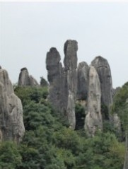

没有人猜石头名字了，公布答案
#1 没有人猜石头名字了，公布答案 作者：蓝天蓝 发表时间：2011-7-12 23:01:03
没有人猜石头名字了，公布答案

癞蛤蟆想吃天鹅肉

夫妻峰

熊掌
大家觉得像吗？
［ 以和为贵 于 2011-7-13 7:18:27 时花20金币送鲜花一朵］
#2 Re:没有人猜石头名字了，公布答案 作者：以和为贵 发表时间：2011-7-13 7:18:36
千姿百态，鬼斧神工。［ 蓝天蓝 于 2011-7-13 12:20:42 时花20金币送鲜花一朵］
#3 Re:没有人猜石头名字了，公布答案 作者：死劲哭 发表时间：2011-7-13 7:58:03
百年沧桑 神鬼莫测
［ 蓝天蓝 于 2011-7-13 12:20:59 时花20金币送鲜花一朵］
#4 Re:没有人猜石头名字了，公布答案 作者：被感动的人 发表时间：2011-7-13 12:18:42
第一幅图我一直以为像两只狐狸的头~

这个熊掌峰我怎么看都觉得这个像牛，红色标出来的像牛头，黄色标出来的像眼睛，绿色标出来的像鼻子嘴巴，右边一大块就像身子。头上的四个凸起，可以当做犄角和耳朵~这多像一头回头的牛哇~
［ 蓝天蓝 于 2011-7-13 12:20:10 时花20金币送鲜花一朵］
#5 Re:Re:没有人猜石头名字了，公布答案 作者：蓝天蓝 发表时间：2011-7-13 12:22:05
引用：
原文由 被感动的人 发表于 2011-7-13 12:18:42 :第一幅图我一直以为像两只狐狸的头~
这个熊掌峰我怎么看都觉得这个像牛，红色标出来的像牛头，黄色标出来的像眼睛，绿色标出来的像鼻子嘴巴，右边一大块就像身子。头上的四个凸起，可以当做犄角和耳朵~这多像一头回头的牛哇~
［ 蓝天蓝 于 2011-7-13 12:20:10 时花20金币送鲜花一朵］
妹妹的想象力挺丰富
#6 Re:没有人猜石头名字了，公布答案 作者：被感动的人 发表时间：2011-7-13 12:23:57
熊掌么吃过~不知道啥样子啊#7 Re:Re:没有人猜石头名字了，公布答案 作者：蓝天蓝 发表时间：2011-7-13 12:27:58
引用：吃过还不知道啥样子？
原文由 被感动的人 发表于 2011-7-13 12:23:57 :
熊掌么吃过~不知道啥样子啊
#8 Re:没有人猜石头名字了，公布答案 作者：被感动的人 发表时间：2011-7-13 12:29:55
么吃过=没吃过

#9 Re:没有人猜石头名字了，公布答案 作者：悟石 发表时间：2011-7-13 13:08:02
................
蓝天蓝版主，我以为你让大家猜我的名字叫什么呢
［此帖子已被 悟石 在 2011-7-13 13:09:08 编辑过］
［ 被感动的人 于 2011-7-13 13:22:04 时花20金币送鲜花一朵］
［ 蓝天蓝 于 2011-7-13 15:10:40 时花20金币送鲜花一朵］
#10 Re:Re:没有人猜石头名字了，公布答案 作者：被感动的人 发表时间：2011-7-13 13:22:48
引用：哈哈哈~我忍不住滴笑~我忍不住滴笑~~~~~~·
原文由 悟石 发表于 2011-7-13 13:08:02 :................
蓝天蓝版主，我以为你让大家猜我的名字叫什么呢
［此帖子已被 悟石 在 2011-7-13 13:09:08 编辑过］
［ 被感动的人 于 2011-7-13 13:22:04 时花20金币送鲜花一朵］
#11 Re:Re:Re:没有人猜石头名字了，公布答案 作者：死劲哭 发表时间：2011-7-13 15:09:59
坦率地讲，对于没亲临此境的人来说，猜对这些石头名字的概率是非常低的，因为多数都是人为注入的文化。（ 那个熊掌真的很象牛）还是这块‘象’石，估计大家都不会猜错
［ 被感动的人 于 2011-7-13 15:39:21 时花20金币送鲜花一朵］
#12 Re:Re:没有人猜石头名字了，公布答案 作者：蓝天蓝 发表时间：2011-7-13 15:12:32
引用：
原文由 被感动的人 发表于 2011-7-13 12:23:57 :
熊掌么吃过~不知道啥样子啊
熊掌么，吃过， 俺是这样读滴，看来标点符号还是有必要加上滴

#13 Re:Re:Re:没有人猜石头名字了，公布答案 作者：死劲哭 发表时间：2011-7-13 15:17:41
引用：
原文由 蓝天蓝 发表于 2011-7-13 15:12:32 :引用：
原文由 被感动的人 发表于 2011-7-13 12:23:57 :
熊掌么吃过~不知道啥样子啊
熊掌么，吃过， 俺是这样读滴，看来标点符号还是有必要加上滴
我还在想呢，吃过熊掌的大概只有两种情况：一是年代久远（那时动物保护的法规还未形成，但她的年龄显然没那么大）；二是食于还未推行动物保护的国家。［ 被感动的人 于 2011-7-13 15:39:35 时花20金币送鲜花一朵］
#14 Re:Re:Re:没有人猜石头名字了，公布答案 作者：被感动的人 发表时间：2011-7-13 15:41:01
引用：所以我才没有加标点嘛~死劲哭mm好聪明滴哇~
原文由 蓝天蓝 发表于 2011-7-13 15:12:32 :引用：
原文由 被感动的人 发表于 2011-7-13 12:23:57 :
熊掌么吃过~不知道啥样子啊
熊掌么，吃过， 俺是这样读滴，看来标点符号还是有必要加上滴

#15 Re:没有人猜石头名字了，公布答案 作者：小小亦默 发表时间：2011-7-20 21:52:43
夫妻峰让我想起来孙悟空
［ 被感动的人 于 2011-7-20 21:59:29 时花20金币送鲜花一朵］
#16 Re:没有人猜石头名字了，公布答案 作者：被感动的人 发表时间：2011-7-20 22:00:50
同感~孙悟空这个石头里蹦出来的给我们的印象太深刻了，其实还可以想到三圣母的貌似~
#17 Re:Re:没有人猜石头名字了，公布答案 作者：小小亦默 发表时间：2011-7-20 22:24:26
引用：其实，我是想想到的五指山
原文由 被感动的人 发表于 2011-7-20 22:00:50 :同感~孙悟空这个石头里蹦出来的给我们的印象太深刻了，其实还可以想到三圣母的貌似~

#18 Re:Re:没有人猜石头名字了，公布答案 作者：猪小姐 发表时间：2011-8-1 20:14:52
引用：
原文由 被感动的人 发表于 2011-7-13 12:18:42 :第一幅图我一直以为像两只狐狸的头~
这个熊掌峰我怎么看都觉得这个像牛，红色标出来的像牛头，黄色标出来的像眼睛，绿色标出来的像鼻子嘴巴，右边一大块就像身子。头上的四个凸起，可以当做犄角和耳朵~这多像一头回头的牛哇~
［ 蓝天蓝 于 2011-7-13 12:20:10 时花20金币送鲜花一朵］
我也觉得像牛头~~~~~~~~
#19 Re:Re:Re:没有人猜石头名字了，公布答案 作者：蓝天蓝 发表时间：2011-8-1 20:24:26
引用：确实有点像牛，不过人家导演说像 熊掌
原文由 猪小姐 发表于 2011-8-1 20:14:52 :引用：
原文由 被感动的人 发表于 2011-7-13 12:18:42 :第一幅图我一直以为像两只狐狸的头~
这个熊掌峰我怎么看都觉得这个像牛，红色标出来的像牛头，黄色标出来的像眼睛，绿色标出来的像鼻子嘴巴，右边一大块就像身子。头上的四个凸起，可以当做犄角和耳朵~这多像一头回头的牛哇~
［ 蓝天蓝 于 2011-7-13 12:20:10 时花20金币送鲜花一朵］